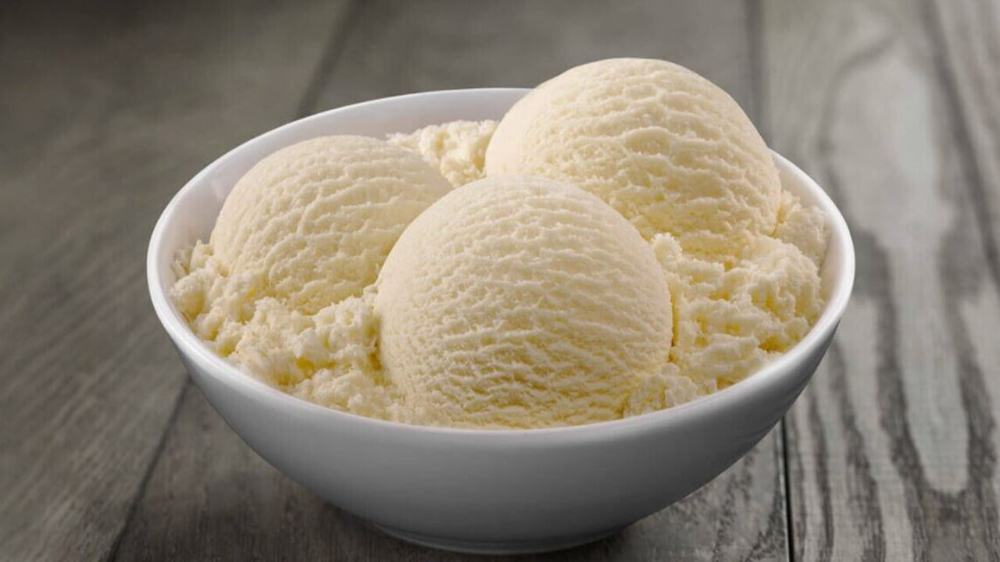

Odin Recipes
Vanilla Ice Cream

Description
This homemade ice cream is easy to make with just 4 ingredients: pure vanilla extract, milk, heavy whipping cream,
and sugar. This American or Philadelphia-style ice cream makes for a brighter, more pronounced vanilla flavor.
Ingredients
- Milk: This homemade vanilla ice cream starts with 2 ¼ cups of milk.
- Heavy whipping cream: A cup of heavy whipping cream comes next.
- Sugar: White sugar sweetens things up.
- Vanilla: Two teaspoons of vanilla extract enhances the overall flavor.
Steps
- Cook the milk, cream, and sugar until the sugar has dissolved.
- Transfer the mixture to a measuring cup, then add the vanilla extract. Chill overnight.
- Pour the mix into an ice cream maker and churn according to the manufacturer's directions.
- Serve immediately or ripen in the freezer before serving.